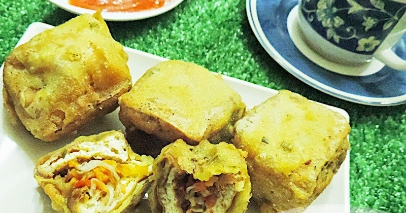

Gehu Pedas

Jajanan khas Bandung yang enak ini namanya Gehu (Toge Tahu) Pedas, namun isinya dimodifikasi dengan jenis sayuran yang lain tidak lagi menggunakan toge. Isiannya kini lebih variatif yaitu kol, bihun dan wortel, bila ingin lebih spesial bisa ditambahkan daging ayam atau udang. Isiannya ditumis terlebih dahulu dengan campuran bumbu rempah yang pedas, tentunya sesuaikan saja tingkat kepedasannya dengan kekuatan dengan selera anda atau anggota keluarga anda. Tahu yang digunakan adalah tahu kuning yang digoreng hingga berkulit,
kemudian diberi isi dan dicelupkan dalam adonan terigu dan digoreng hingga kulit adonan garing dan renyah.
Rasanya yang enak dan pedas dengan kulit adonan yang garing dan renyah menjadikan Gehu Pedas sebagai lahan usaha yang banyak bermunculan disetiap sudut kota di Bandung. Untuk anda yang ingi nmencoba membuatnya sendiri, berikut adalah resep dan cara membuat Gehu Pedas Hot Jeletot (pedas sekali)
jajanan Khas kota Bandung.
Resep-resep gehu pedas goreng renyah
Bahan:
- 10 bh tahu kuning, goreng hingga berkulit,
- Minyak untuk menggoreng.
Isi:
- 100 gr ayam giling,
- 75 gr kol, diiris halus,
- 75 gr bihun, seduh dengan air panas sampai layu, tiriskan,
- 150 gr wortel, diiris korek api, diseduh,
- 9 buah cabai rawit merah, haluskan, (Atur sesuai selera anda),
- 5 butir bawang merah, haluskan,
- 3 siung bawang putih, haluskan,
- 1 sdt garam,
- 1/4 sdt merica bubuk,
- 1/2 sdt gula pasir,
- 3 sdm untuk menumis.
Pelapis:
- 100 gr tepung terigu protein sedang,
- 20 gr tepung sagu,
- 1 sdm tepung beras,
- 1 batang daun bawang, diiris halus,
- 1/2 sdt garam,
- 1/4 sdt merica bubuk,
- 175 ml air. Aduk semua hingga merata.
Cara membuat:
- Isi : Panaskan minyak, tumis bawang merah, bawang putih dan cabe rawit yang telah dihaluskan sampai harum. Masukan ayam, aduk sampai masak.
- Tambahkan wortel, kol dan bihun, aduk rata. Bubuhkan garam, gula, merica dan air, aduk rata sampai layu dan airnya meresap.
- GEHU : ambil satu buah tahu, belah sedikit salah satu sisinya, masukan isian secukupnya. Ulangi sampai semua bahan habis.
- Celupkan tahu isi kedalam adonan tepung, goreng dalam minyak panas sampai kuning kecoklatan. Angkat.
- Sajikan selagi hangat.
Lokasi penjual gehu pedas di kota Bandung.